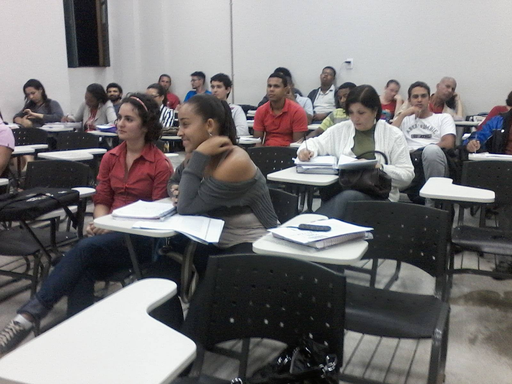
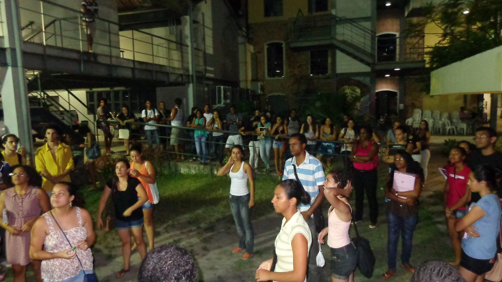
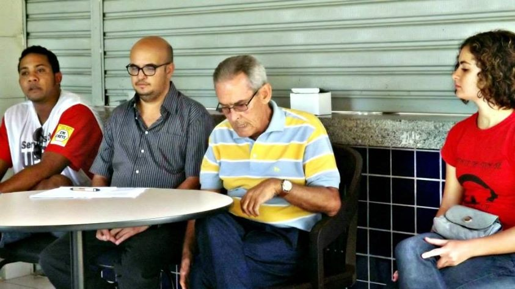
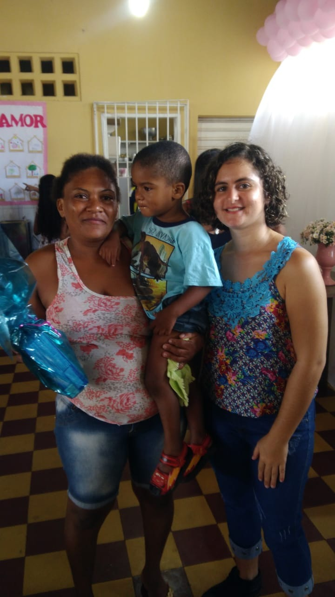
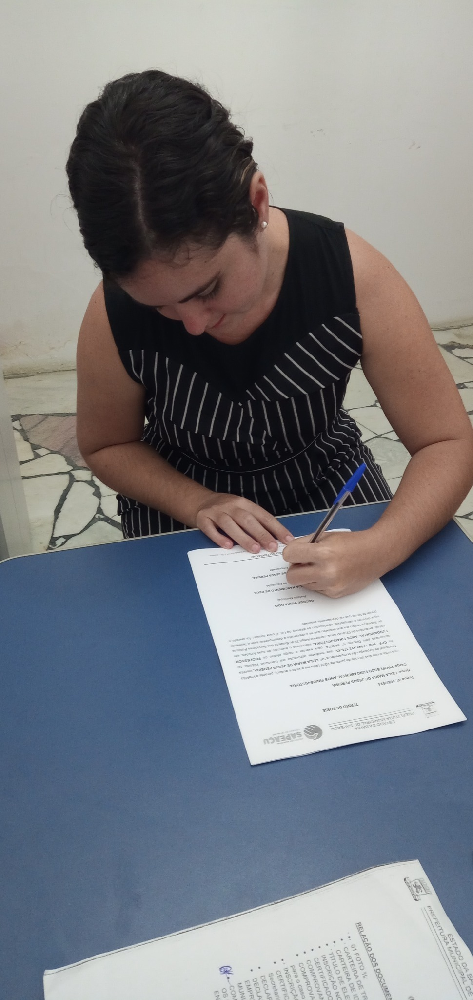
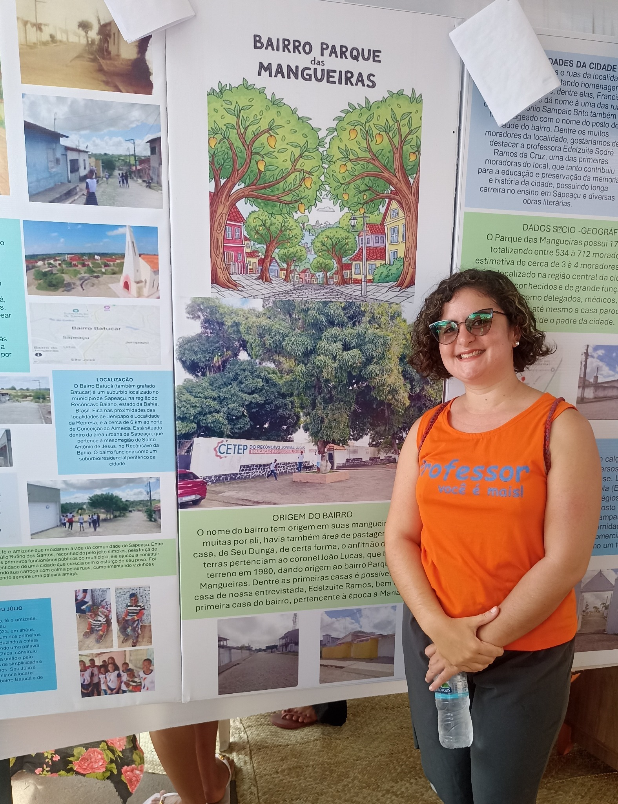

2013
Sala de aula
Turma de 2013 nas aulas do seu primeiro semestre. O registro marca o início da experiência de Leila no Curso de História da UFRB.
Trajetória de egressa
Da experiência no CAHL à docência na educação pública
2013.2–2018.1
Leila ingressou na Licenciatura em História da UFRB em 2013.2 e concluiu o curso em 2018.1. Em sua memória da graduação aparecem não apenas as aulas, mas também o movimento estudantil, o PIBID, a monitoria, os eventos acadêmicos, as amizades e a vida cotidiana no CAHL.
Viver o CAHL
As fotografias enviadas por Leila permitem acompanhar dimensões diferentes da vida universitária: a sala de aula, a representação discente e a mobilização estudantil.

Turma de 2013 nas aulas do seu primeiro semestre. O registro marca o início da experiência de Leila no Curso de História da UFRB.

Roda de conversa sobre a Ditadura Militar com Hermes Peixoto, Leila Maria como representante discente de História, Luis Gustavo como representante dos servidores e Antônio Eduardo como representante docente.

Manifestação organizada pelos estudantes reivindicando melhorias na internet do centro e acesso ao sistema da biblioteca.
Depois da UFRB
Depois da graduação, os caminhos acadêmicos e profissionais de Leila podem ser acompanhados também no Mapa dos Egressos, seguindo a mesma lógica adotada para o perfil de Alfredo.
Ingresso no mestrado em História Social da Universidade Estadual de Feira de Santana (UEFS).

Leila começou a dar aulas de História no cursinho popular e na rede municipal de Sapeaçu.

Tomada de posse no cargo de Professora de História efetiva da Prefeitura Municipal de Sapeaçu.
Leila hoje
Atualmente, Leila atua como professora na Escola Moisés Alves, em Sapeaçu. No formulário do Memorial, ela informou Cruz das Almas como cidade atual e Sapeaçu como local de atuação profissional. O mapa preserva essa distinção e representa, no ponto atual, sua atuação docente em Sapeaçu.
Atuação: Professora
Instituição: Escola Moisés Alves
Local de atuação: Sapeaçu, Bahia

“O período da graduação foi um dos melhores momentos da minha vida, aproveitei bastante e fiz muito barulho, rsrsrs. Com certeza, foi especial ter vivido essa fase no Cahl.”